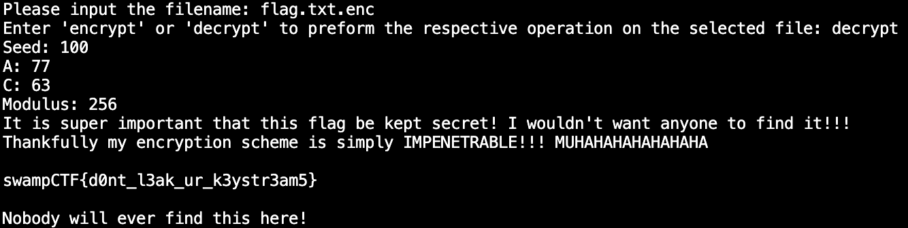

Here is how the encryption is implemented.
It seems the message is padded with 1000 bytes of 'AAAAAAAA....'.
Using the properties of XOR, we can take the final 1000 bytes of the ciphertext, XOR each one with 'A', and recover what the value of 'seed' was for each byte of padding.
This an example of what that list of seeds might look like (this is not the actual cycle from flag.txt.enc). As you can see, there seems to be a pattern.
We know from the python code that 'seed' is calculated using constants, a, c, and modulus. The only differentatior that will make each seed different from the last is the use of the previous seed in the calculation.
In other words: for any given seed, the value of the next seed is deterministic.
This is what creates these cycles (in the above example 24, 105, 96, 114, 78, 150, 6, 141, 24, repeat).
It is worth noting that these cycles can be at most length=modulus (and modulus can be at most 256).
Now, let us take a look at the cycle that was actually used to encrypt the flag.
I've taken the liberty of just printing one iteration of the cycle instead of the full 1000 seeds.
This cycle is much longer than last time. In fact, it is the maximum possible length of 256. This means that every number from 0 to 256 appears exactly once.
We know that cycles of 256 can only appear when the modulus is at least 256 (which is its maximum possible value), thus modulus = 256.
Lets take a closer look at part of this cycle.
0 is followed by 63. Plugging in what we know into the given seed formula, we get:
63 = (a*0 + c) % 256
Since we know c has an upper limit of 256, we can determine that c = 63.
Lets keep looking around the cycle.

Here we see that 1 is followed by 140. Now we know that:
140 = (a + 63) % 256
Given the known bounds for a, from this we can determine that a = 77.
The last thing we need to calculate is the initial seed.
We've got this nice cycle of seeds in the padding, so if we know how much actual message was encrypted before the padding then we can find out the true beginning of our cycle.
We can see in the implementation that there are always 1000 bytes of padding added, so we can just check how many bytes are in the encrypted message and subtract 1000 to get the byte count of the message.
There we have it, 238 bytes.
Checking our modulus-msg length=256-238=18th seed byte should give us the answer.
And if you'll refer to the picture of the cycle, you can see that initial seed = 100.
Now we can just use the built-in decryption functionality to get the flag.
